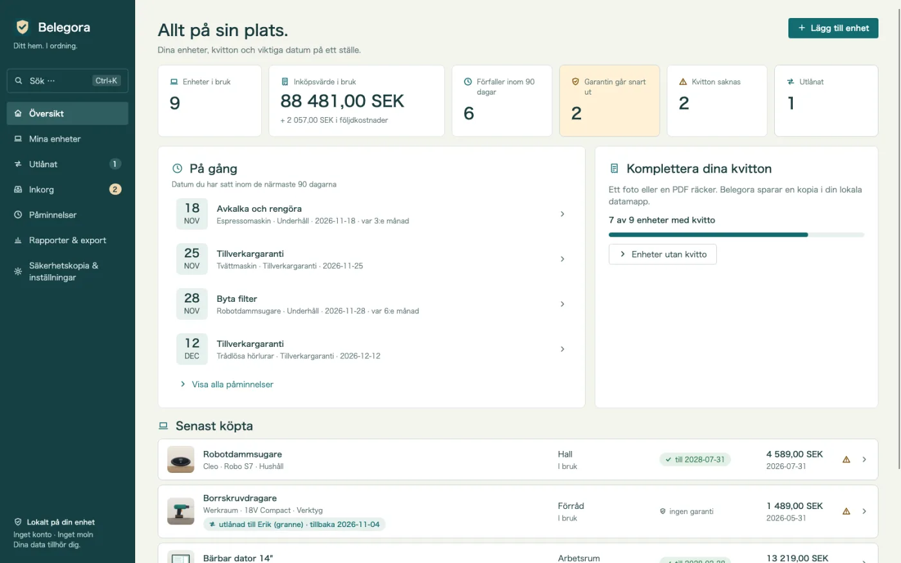
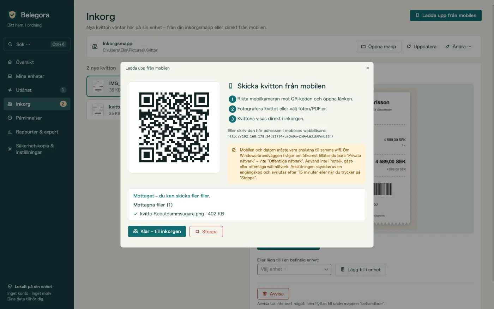
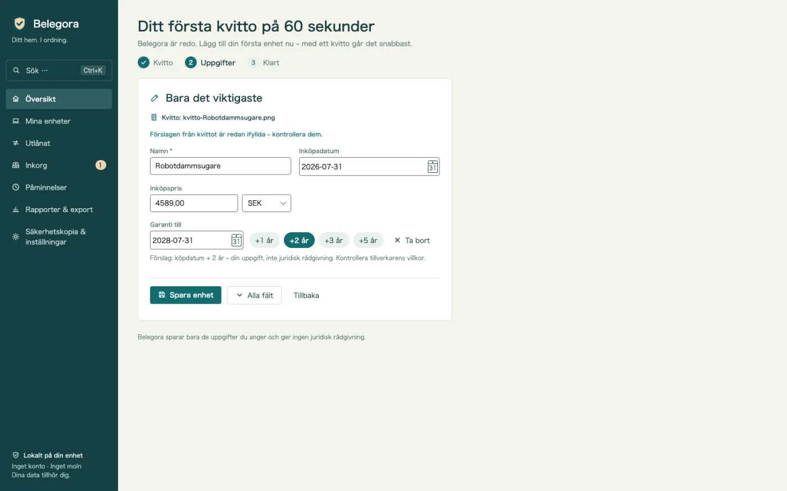
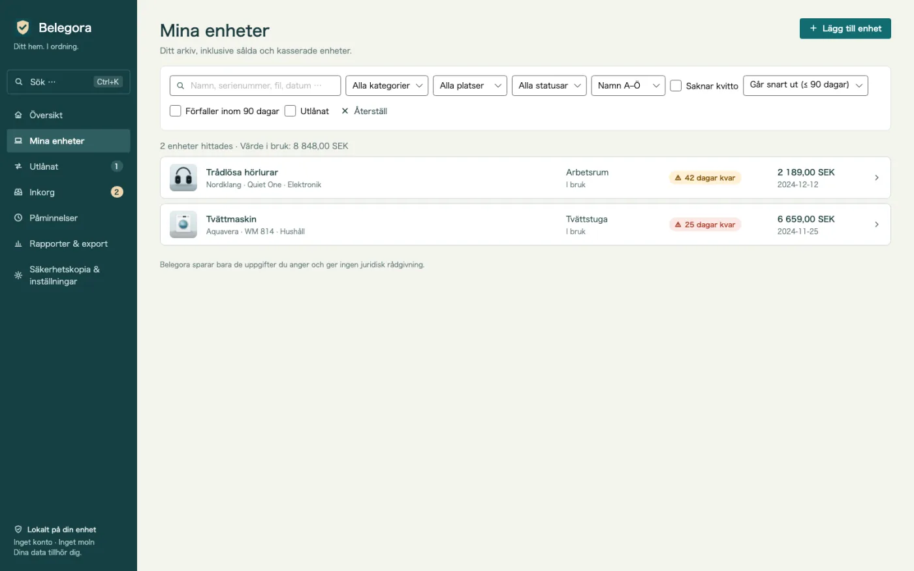
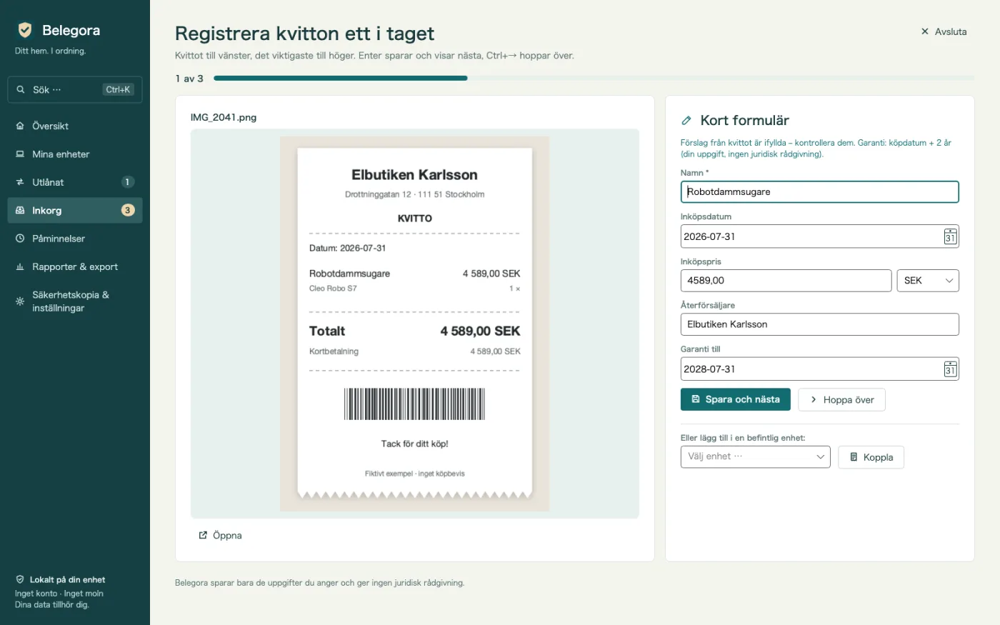
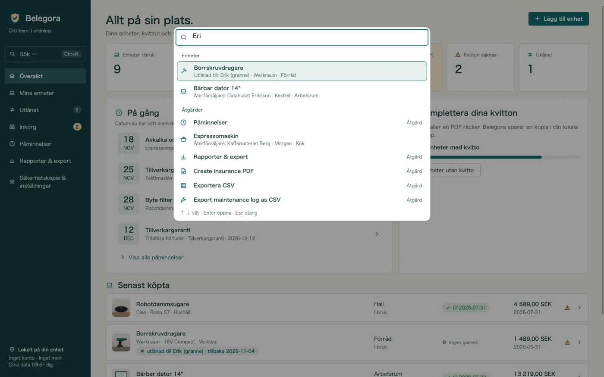
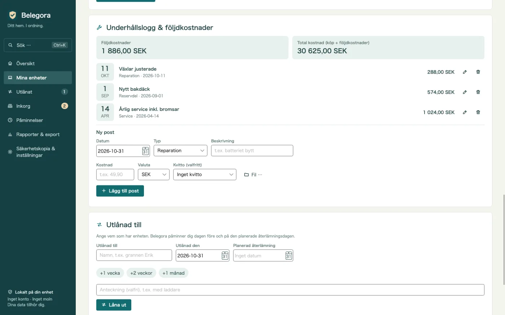
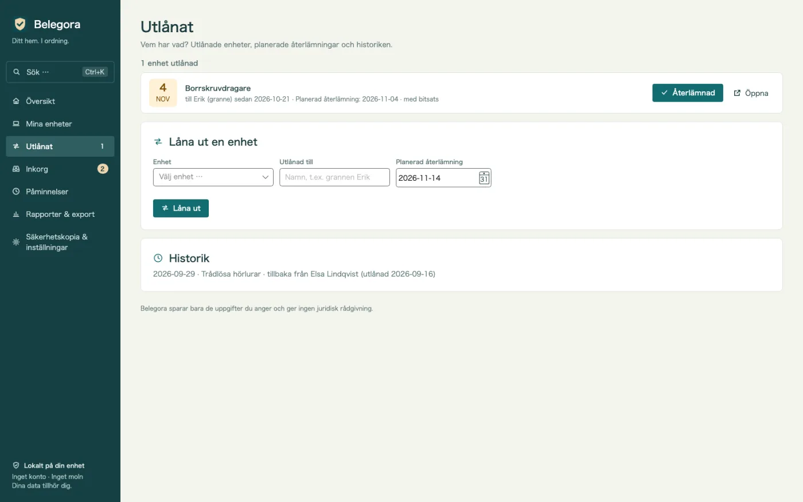
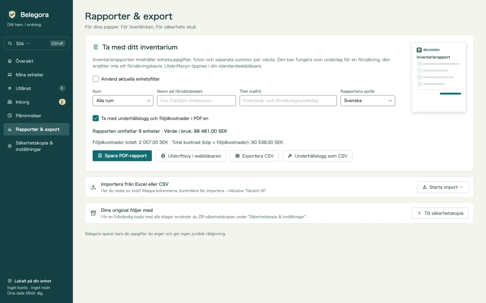
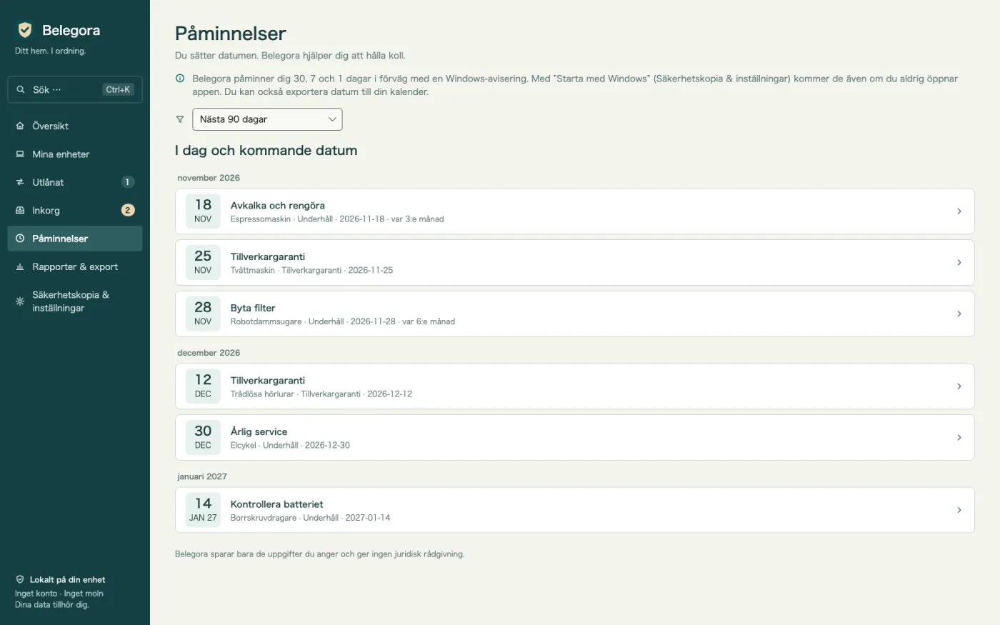

Påminnelse före dina datum
Garanti, retur, försäkring, service: Belegora visar en Windows-avisering så många dagar i förväg som du vill.
Garanti- och kvittoarkiv för Windows
Batteriet dog efter 20 månader? Kvitto, serienummer och garantidatum på några sekunder. Kvitton från mobilen via QR-kod, påminnelser före dina egna datum och pdf till försäkringen. Offline, utan konto.

Belegora sköter det tråkiga: samlar kvitton, föreslår uppgifter och påminner dig före dina datum.
Garanti, retur, försäkring, service: Belegora visar en Windows-avisering så många dagar i förväg som du vill.
Skanna QR-koden och ladda upp ett foto i webbläsaren. Kvittot hamnar via ditt wifi i inkorgen. Utan kabel, moln eller app.
Köpdatum, belopp och butik föreslås från kvittot. Granska, spara och prylen skapas med ett klick.
Prylistan visar direkt var garantin snart går ut, med kolumnen ”Garanti till”.
Hitta varje pryl på namn, serienummer, återförsäljare, tagg, fil eller låntagare, plus åtgärder som PDF eller säkerhetskopia – med piltangenter och Enter.
Många kvitton i följd: kvittot till vänster, det korta formuläret med förslag till höger. Enter sparar, Ctrl+→ hoppar över.
Anteckna reparationer, service, reservdelar och tillbehör med kostnad. Följdkostnader och total kostnad per pryl, även i PDF och som CSV.
Vem har borrmaskinen? Utlånad till, sedan när, planerad återlämning – med påminnelse och historik. Plus en översikt en gång i veckan.
Efter vattenskada eller inbrott: rapport med försättsblad, lista per rum, summor, foton och kvitton. Valfritt rapportspråk.
Ta med din lista med kolumnmatchning. Exportera till CSV och datum till ICS för valfri kalender.
Säkerhetskopior med bilagor sker automatiskt. Återställningen visar en förhandsgranskning.
Inget moln, konto, reklam eller spårning. Dina data stannar på din dator.
Bra att veta: Belegora sparar dina uppgifter och datum och ger ingen juridisk rådgivning. Aviseringar visas medan Belegora körs; appen kan starta med Windows. Textigenkänningen använder Windows OCR och kräver motsvarande språkpaket i Windows.
Skicka ett foto från mobilen via QR, lägg en fil i inkorgsmappen eller importera din Excel-lista.
Belegora föreslår datum, belopp och butik. Skapa prylen, ange datum och förvarning.
Belegora påminner i tid. Om något händer gör du försäkringsrapporten på några minuter.









14,99 €
engångsköp, planerat pris i Tyskland
Förbereds för Microsoft Store. Priser i andra länder kan skilja sig.
Bara du. Belegora skickar inga data till oss eller andra; inget konto, ingen telemetri. Uppladdning från mobilen fungerar bara i ditt lokala nätverk.
Lokalt på din dator i appens datamapp (%LOCALAPPDATA%\MinhStudios\Belegora), tillsammans med kopior av bilagor och de automatiska säkerhetskopiorna.
Skapa en säkerhetskopia i Belegora (zip med alla data och bilagor), kopiera den till den nya datorn, installera Belegora och återställ. Förhandsgranskningen visar vad som återställs.
Nej. Belegora sparar dina uppgifter och datum och ger ingen juridisk rådgivning. Om du har rätt avgör butik, tillverkare eller försäkringsbolag.
Aviseringar visas medan Belegora körs; appen kan starta med Windows. Du kan också exportera datum som ICS till kalendern.